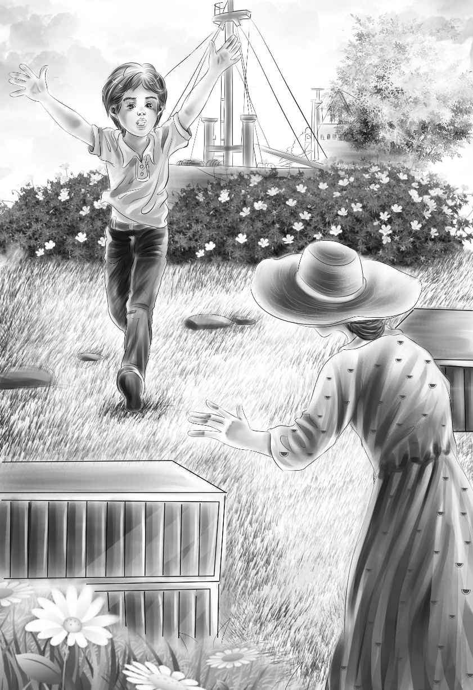

As the two boats went through Blue Bay,Captain Brown took a picture of the beach. He said,"That will show the fireplace and the two houses. And now I am ready to make any plans you want to,Mr. Alden."
"Well,first,maybe Peter's parents were not saved. But I will do everything to find out. So this is my plan."
By the time the boats reached the Sea Star,the plan was made. The crew was waiting at the rail. They were all laughing. They helped the family out of the lifeboat and carried the turtle-kettle up on the deck. The Captain went at once to the radio room.
Mr. Alden sat down and looked all around. "Oh,another cup of coffee!" he said. He took it from the sailor. "Thanks very much."
"Just think of having a saucer!" said Benny. "Oh,Grandfather,he's bringing some toast!"
The children looked hard at the toast. "Buttered toast!" yelled Mike. He could hardly get the words out.
Mr. Alden looked at Peter. Then he began to count,"—one,two,three,four,five,—six with Lars. Will you bring a whole loaf of buttered toast,please?" he said. "These children would like lots of bread and butter. Think of that!"
When it came,Peter looked at it. "I can't believe it," he said. But when the Captain came back,all the children ate as if they were starved.
"That's all we want," said Henry. "Bread."
Peter said,"I'll never eat bread again without being thankful."
Then Mr. Alden said,"After this,don't go into the radio room. You used to go and talk with Bill. But now,don't."
The Captain noticed that nobody said "Why?" He thought,"And that's all there is to it! I wish all people behaved as well as that."
The Sea Star was going at full speed. Bill went in and out of the radio room very often. He always took a yellow paper to Mr. Alden. Grandfather would say a few words and Bill would go back.
"Now we'll show you the ship,Peter," said Benny.
When they all came back on deck Grandfather said,"Your lessons begin again this afternoon. Even Peter! And this time,you will each write a book. About this trip."
"Write a book!" cried Jessie. "What fun!"
"Write a book?" said Mike. "I can't write a book!"
"You'll have to,if Grandfather says so,Mikey old boy!" said Benny. "I'll bet your book will be the best and funniest of all."
It was. Mike kept them all laughing as he read each page.
The children kept busy,but they longed to get home. After many days,a loud bell rang. All the children jumped up and ran up on deck.
"I thought that loud bell would get you!" said Grandfather. "Good news,Peter!"
"You mean Peter's father?" whispered Mike.
"Yes! His father and mother are alive. They will be waiting for us at the dock in San Francisco."
"Oh,my!" said Peter.
"Now you can all read the radiograms. The last one just came. It says,‘Son Peter Horn last seen in lifeboat from Explorer II.'"
"My own father sent that?" asked Peter.
"Yes,he signs his name,Peter Horn."
Henry put his arm around Peter and said,"Come on,old boy,and sit down on the bench." Benny and Mike sat down on the other side.
"And we land tomorrow!" said Mr. Alden.
"I hope I can live till tomorrow," said Benny.
They all lived till "tomorrow." They were very much excited when they began to see land. San Francisco came nearer and nearer. They went under the Golden Gate bridge. Soon they saw the dock.There were crowds of people waiting for ships.
"Oh,dear," said Jessie. "I suppose we must say goodby to the crew."
They all shook hands with Captain Brown and the sailors. But then they came to Lars.
Violet looked up at Lars and said,"How can we say goodby to you,Lars?"
Mike said,"Maybe we'll never see you again."
But Lars smiled at Violet and said,"You'll see me again,all right. I often come your way."
"Come to dinner!" said Benny. "Come any time! We'll have beans for you!"
Just then Peter began to shout,"Oh,I see my mother!And my father!There they are,waving!"
"Is that your mother?" yelled Benny. "It's not our teacher! It doesn't look a bit like her."
"I was sure you boys would be disappointed about that," said Grandfather.
"I don't care," said Benny. "The neat thing is thatshe'sPeter's mother!"At last they were all on the dock.
"Hi! Mother!" cried Peter.
"I thought I would never see you again!" said Mrs. Horn.
Mr. Horn took Peter's hand to help him up the steps to the street.
"Don't help Peter,Mr. Horn," said Mike. He laughed. "Peter can climb right up the side of a house!"
Peter was not too happy wearing shoes. But he did very well.

Mr. Alden looked at Mr. Horn. He said,"Let's go to some quiet place! We'll have lunch,and then we'll all take the plane east."
"I never can thank you enough for bringing Peter home!" said Mr. Horn.
"Don't try," said Mr. Alden. "Here are some taxis. Everyone get in."
Very soon they were all sitting at a big table for lunch. "Oh,peanut butter." cried Benny. "I thought I'd never see you again!"
"Is that what you want?" asked Mr. Alden. He laughed. All of them wanted peanut butter. "Think of that,Mr. Horn," he said. "They want peanut butter,when they can have almost anything in the world."
Peter's father and mother were told all about Blue Bay. Peter's mother said,"At last we have found Peter. I never really gave up hope of finding him."
"Grandfather finds lots of things," said Benny. "Now where will Peter live?"
"Peter will live near Boston. This is a picture of our house," said Mr. Horn. He took out a picture.
"A nice little place!" said Mike. "Nice trees to climb,but no banana trees."
"No," said Mr. Horn laughing. "We have no banana trees."
After lunch they all took the plane. Everyone on the plane smiled to see the happy group. They talked all the time. Mike and Benny walked up and down.They told the passengers about the island,and all about Peter.
Mike did not want to get off at Chicago. But when he saw his mother and his brother Pat,he changed his mind.
"And my teacher!" he yelled. "My teacher came to meet me! I bet she doesn't know that bananas grow up and not down!"
"That's our Mike for you!" said Henry. He patted Mike's shoulder. "Next year you will be teaching your teachers,Mike."
At last the plane landed in Boston. They all got off the plane. Then they had to say goodby to Peter.
"We'll come to see you often," said Henry.
Mr. Horn carried old Myna's cage. Old Myna said,"What's the matter,Mike?"
Benny laughed and laughed. He said,"That shows that old Myna doesn't know what she says. She just talks."
"Mike's gone," said Myna. She looked right at Benny.
"What do you know!" said Henry.
"What do you know!" said Myna.
"Let's go,Mother," said Peter. "Next thing old Myna will say,‘Look out,it's hot!'"
"Well,it is hot,sure enough," said Benny.
They all watched Peter go out of the door of the airport.
Henry took a long breath. He said,"Grandfather,we can never thank you enough for this wonderful trip."
"Don't try,my boy," said Mr. Alden. "I had a pretty good time myself." The Alden family reached home. Watch began to bark. He was so glad to see his family again. Mr. Alden began to sing,"East,west,home is best."
Benny hugged Watch. He said,"Well,that's right,Grandfather. Home is best. But Blue Bay was pretty neat,too. Let's go somewhere else next year."
Mr. Alden smiled at Benny. But all he said was,"Maybe."
The children were very happy. They all knew that with Grandfather,maybe almost always meant yes.